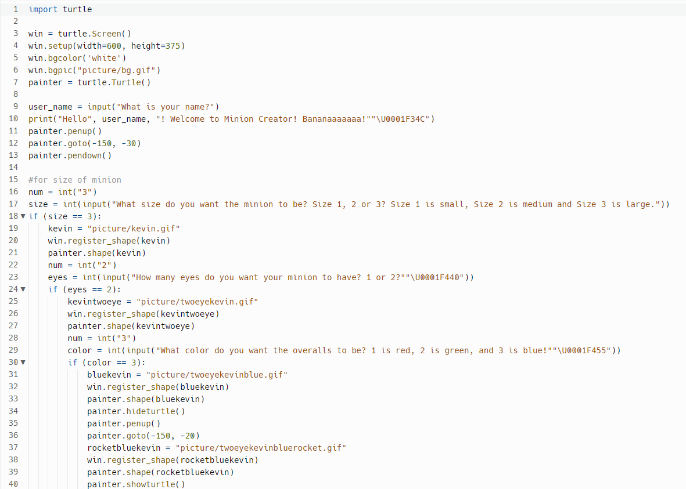
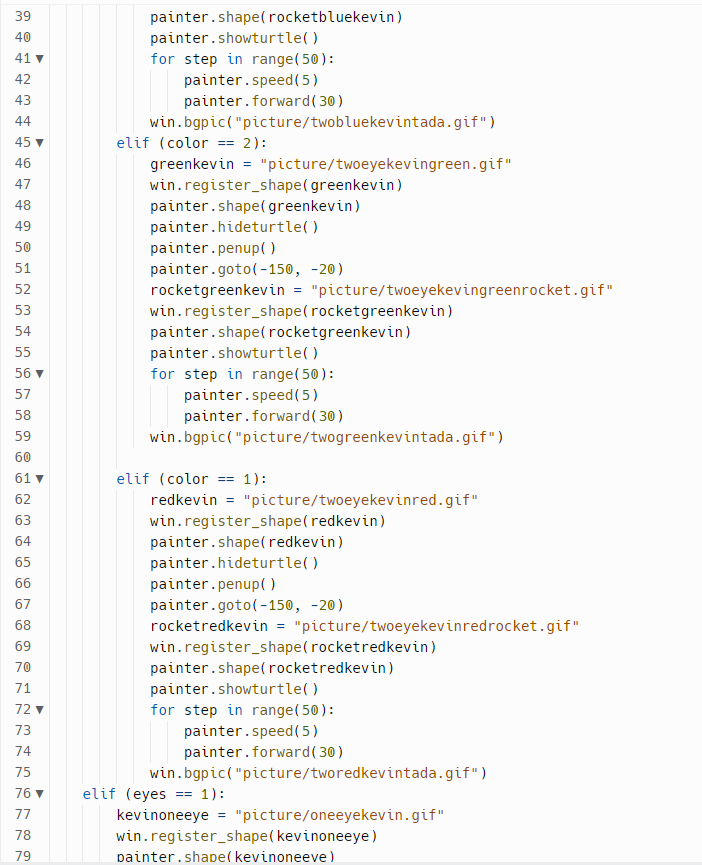
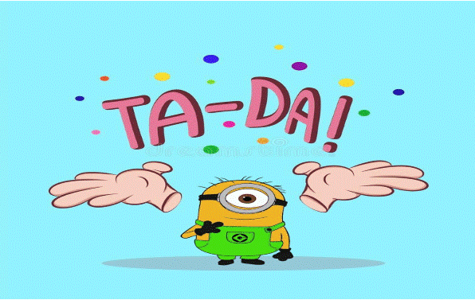

Home
Portfolio
About Me
Natalie's Portfolio
1.1.9 Project - Minion Creator



My project is called the “Minion Creator”. The main objective as in the name is to create a minion based off of the user’s inputs. The code allows the user to have 18 different variations of a minion such as a small minion with one eye and red overalls all the way to a large minion with two eyes and blue overalls. Once the user finishes customizing their minion, the minion gets on top of Gru’s car and rides away off the screen. Then, the user is greeted by their minion with a background saying TA-DA!.
Using App Inventor to make app game Duck Hunter.
Interactive Fiction Rags to Riches.
Black Jack game written in Python.
Modified bits in pictures.
Use data files to create graphs.
Using netlogo do remix of illusions.
Interactive Fiction Rags to Riches.